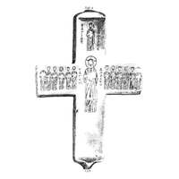

Catalog › CE-0250 · KOR2003-I.2.9
Valvă de cruce-encolpion cu Hristos între 12 apostoli și sfinții Teodor și Gheorghe, încrustație pierdută
sec. XI (1001–1100) · Lavra Pecerska din Kiev, Ucraina · Muzeul-rezervație Kiev-Pecerska Lavra, Kiev, inv. КПЛ-М/3221 (după Пуцко 1987); М-9595 (după Catalogul 1997)
single valve of a reliquary cross, aramă; c. XI (1001–1100); found at Lavra Pecerska din Kiev, Ucraina; kept at Muzeul-rezervație Kiev-Pecerska Lavra, Kiev.


Identificare
- Categorie
- Valvă izolată
- Material
- Aramă
- Tehnică
- Turnare în relief; Niello; Email; Încrustație
- Dimensiuni
- Î 233 × L 148 × Gr 28 mm
Iconografie
- Avers
- Sf. Gheorghe
- Descriere avers
- Valvă de cruce cu capete drepte, cu proeminențe în partea de sus și de jos care trec în balamale de șarnieră. Marginile plăcii din care a fost făcută crucea sunt îndoite și formează laturile ei. Pe exterior, cu crestături pentru încrustație, sunt executate figurile lui Hristos între 12 apostoli și ale sfinților Teodor și Gheorghe (cu cruci în mâini), cu inscripții grecești însoțitoare: lângă capul lui Hristos – IC XC, la stânga și la dreapta figurii lui Hristos inscripții în coloană ІАГНV АПОСТОА; în partea de sus a crucii, de ambele părți ale figurii sfântului, inscripții în coloană ОАГІОС ΘЕѠДОРОС; în partea de jos a crucii, respectiv О[ ] ГЕ[Ѡ]Р[Г]ІОС. Pe capetele traversei sunt reprezentați în picioare arhangheli cu lorum, iar pe laturi sunt medalioane rotunde cu imagini bust de îngeri cu lorum. Imaginea și inscripțiile din partea de jos a crucii sunt aproape complet șterse; din celelalte figuri s-au păstrat doar liniile de contur principale, cu încrustațiile adesea pierdute.
- Inscripții
- IC XC; ІАГНV АПОСТОА; ОАГІОС ΘЕѠДОРОС; О[ ] ГЕ[Ѡ]Р[Г]ІОС
- Limba
- Greacă
Datare și atribuire
- Datare
- sec. XI (1001–1100)
- Centru
- Necunoscut
- Tipologie
- Korzukhina–Peskova 2003, tip I 2
Descoperire
- Localitate
- Lavra Pecerska din Kiev
- Țară
- Ucraina
- Context
- Biserică / mănăstire
Păstrare și referințe
- Colecție
- Muzeul-rezervație Kiev-Pecerska Lavra, Kiev
- Nr. inventar
- КПЛ-М/3221 (după Пуцко 1987); М-9595 (după Catalogul 1997)
- Bibliografie
- G. F. Korzukhina, A. A. Peskova, Древнерусские энколпионы. Нагрудные кресты-реликварии XI–XIII вв., Sankt-Petersburg, 2003 [Korzukhina–Peskova 2003], p. 54, cat. nr. I 2/9, reprodusă la Табл. 8 (planșe, p. 250). Bibliografie citată în sursă: Болховитинов 1847, 292; Фундуклей 1847, рис. между с. 66 и 67; Закревский 1867, 333–334, табл. X; Прохоров 1875, табл. XI; Яковлев 1875, 150–151; Шахматов 1898, 122; Приселков 1913, 261; Залесская 1964, 172, рис. 4; Банк 1966, 314, рис. 203, 204; Пуцко 1987, 217–229 (se dă o bibliografie amplă); Византия, 53, № 54; The Glory, 302, № 205; Корзухина, архив ф. 77, д. 14, л. 35.
- Figura
- Табл. 8
- Planșe
- Korzukhina–Peskova 2003, Табл. 8 (planșă fără paginație proprie în PDF; p. 250 tipărită)
- Observații
- Datare după Peskova: sec. XI. Circumstanțe: După tradiție se păstrează aici din sfârșitul sec. XI ca „crucea lui Marcu Pecernicul”. Tehnica este dată diferit: niello (după Pucko 1987) și email în cuiburi (după Catalogul 1997). Descrierea este alcătuită după articolul lui V. G. Pucko (1987), cu luarea în considerare a cataloagelor din 1997. Piesa este înregistrată în sursă ca „valvă de cruce”; sursa nu spune expres dacă este valva de față. Coordonate: nu sunt date în sursă.
Citare: Corpus Encolpiorum, CE-0250, Valvă de cruce-encolpion cu Hristos între 12 apostoli și sfinții Teodor și Gheorghe, încrustație pierdută, --root/piese/KOR2003-I.2.9/ (accesat 2026-10-17).